沖縄県糸満市照屋 ・ 天然酵母のパン
土曜日の午後、
天然酵母のぱんに会いにいく。
「天然酵母のぱん はなこ」の営業は土曜日だけ。一週間のなかの、ひとつの日のためのパン屋さんです。
- 月
- 火
- 水
- 木
- 金
- 土
- 日
お店のこと
土曜日だけ開く、天然酵母のパン屋。
お店のInstagramによると、「天然酵母のぱん はなこ」は糸満市照屋にあり、営業日は土曜日。時間は11:00〜18:30で、売り切れ次第終了とされています。投稿には桜あんぱんなどの紹介もあります。
毎週 土曜日 11:00〜18:30売り切れ次第終了
店名の由来やオーナーの想いなど、これ以上の情報は公開されている範囲では確認できていません。お店の考えを制作側が決めつけて書くことはしていません。
情報源: Instagram @hanako875_panpan
見出しの言い回しなど、上記の事実以外の文章は制作側の表現です。営業日・時間は変わることがあるため、お出かけ前にInstagramをご確認ください。
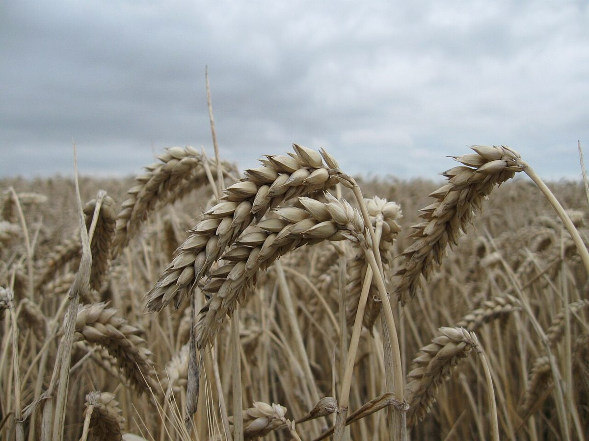
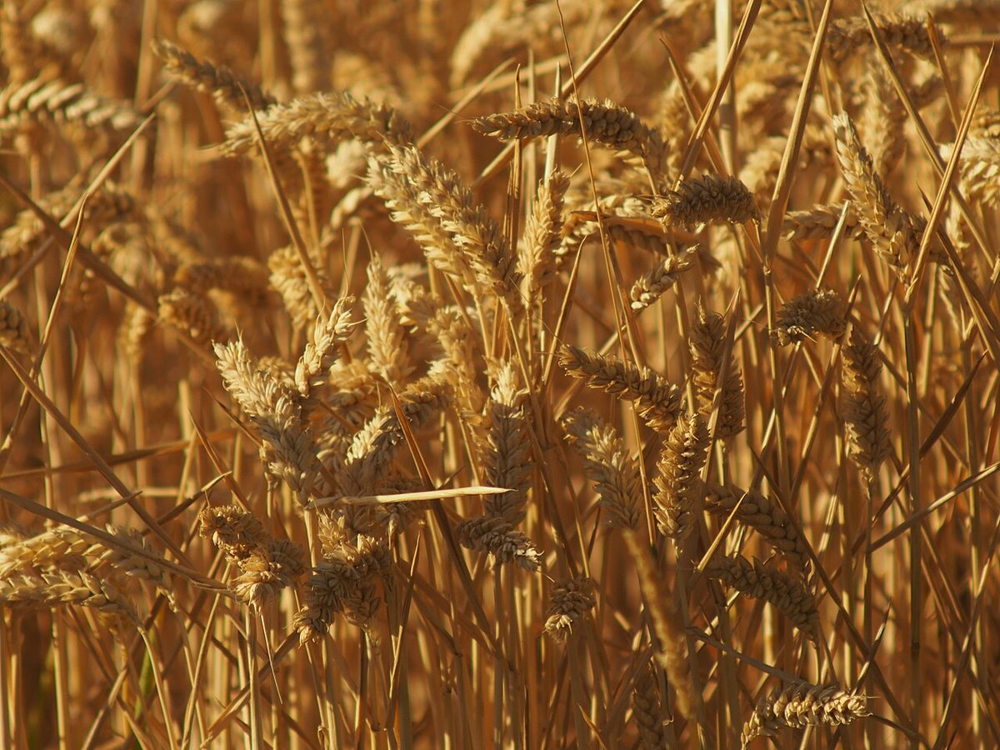
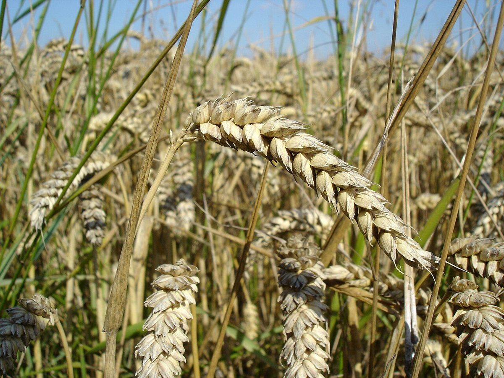
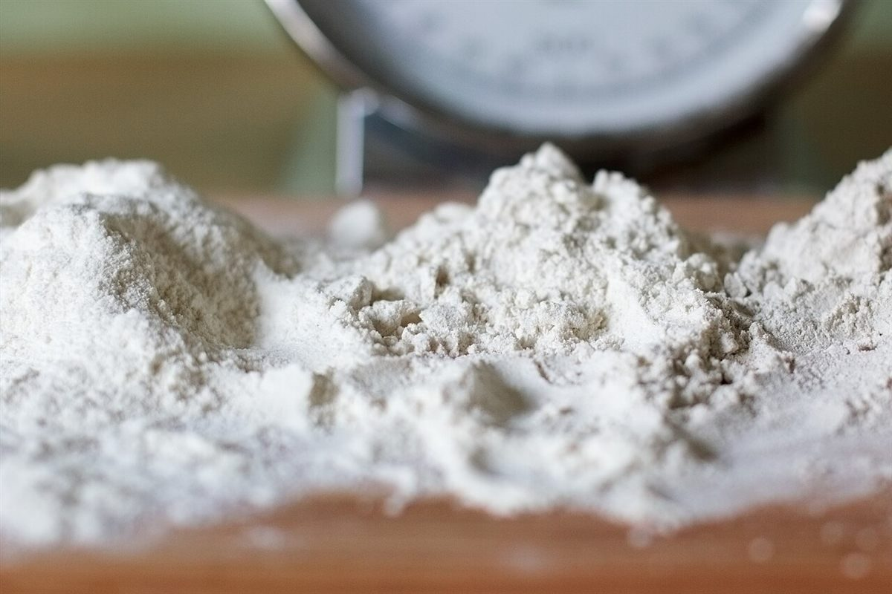
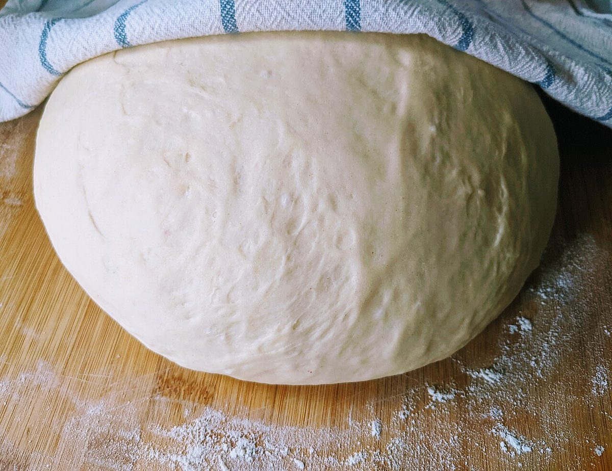
パン
売り切れたら、その日はおしまい。
お店のInstagramでは桜あんぱんなどが紹介されています。ラインナップ・価格は確認できていないため「準備中」としています。下の写真は天然酵母パンの雰囲気を伝えるフリー素材で、お店の商品ではありません。


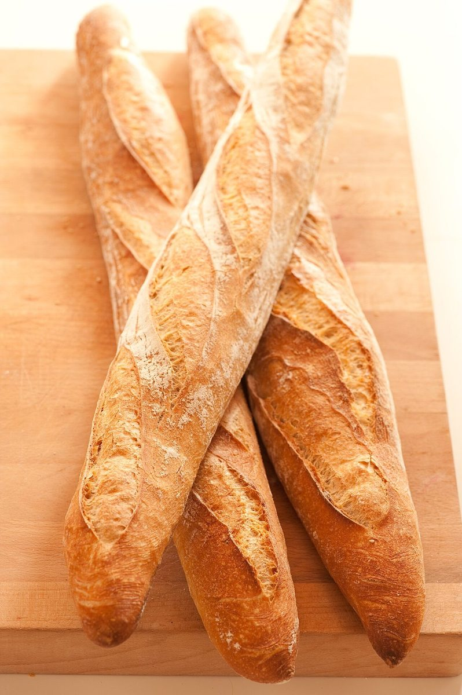
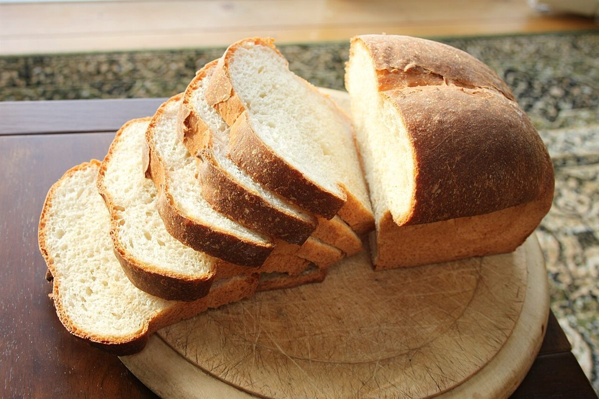
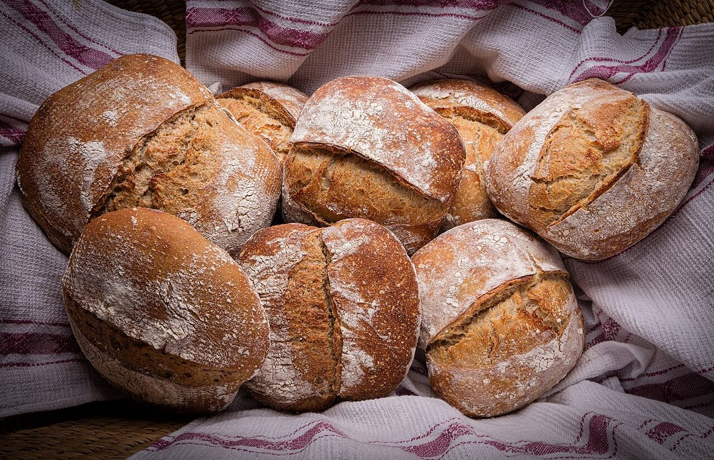

口コミ
お客様の声(イメージ例)
以下は制作側が作成したイメージ例で、実際のお客様の声ではありません。
イメージ例
土曜日だけと聞くと、行く日が楽しみになりますね。
イメージ例
天然酵母のパン、どんな味なのか気になって調べてみたいです。
イメージ例
営業日と時間がすぐ分かると、友人にも伝えやすいと思います。
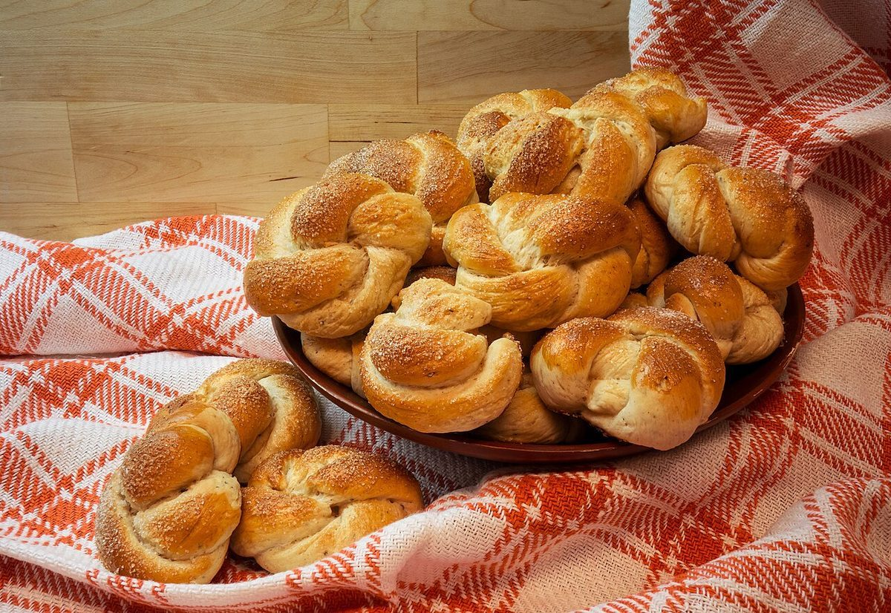
アクセス
糸満市照屋で、土曜日に。
| 所在地 | 〒901-0315 沖縄県糸満市照屋444-5 |
|---|---|
| 営業日・時間 | 土曜日 11:00〜18:30(売り切れ次第終了) Instagramの表示によるもの。変更はInstagramでご確認ください。 |
| 電話 | 準備中 |
| 駐車場 | 準備中 |
| @hanako875_panpan |
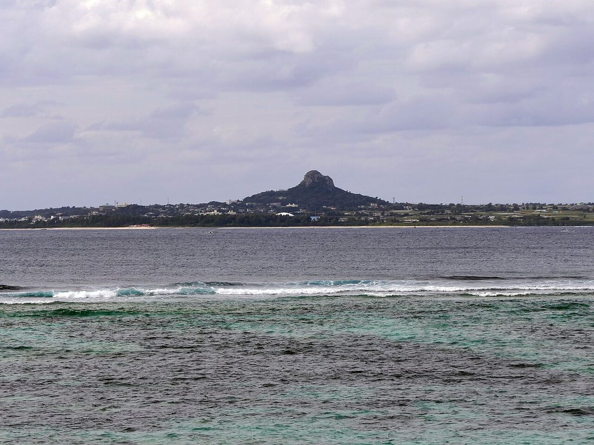
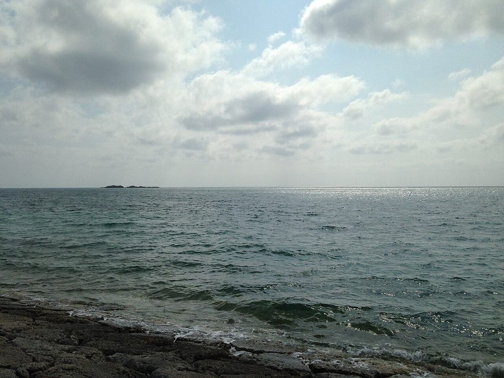
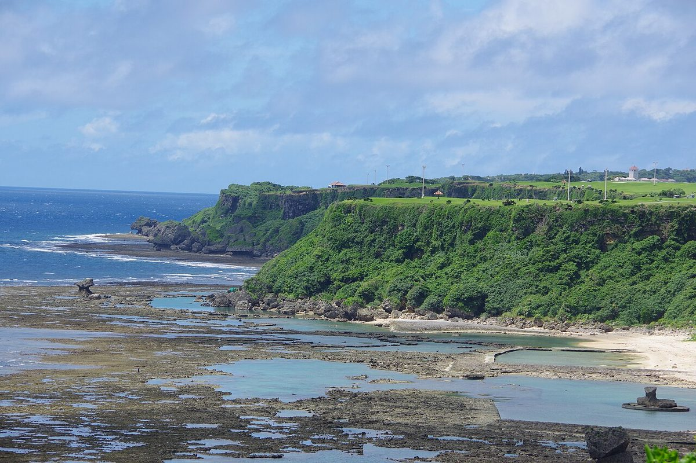